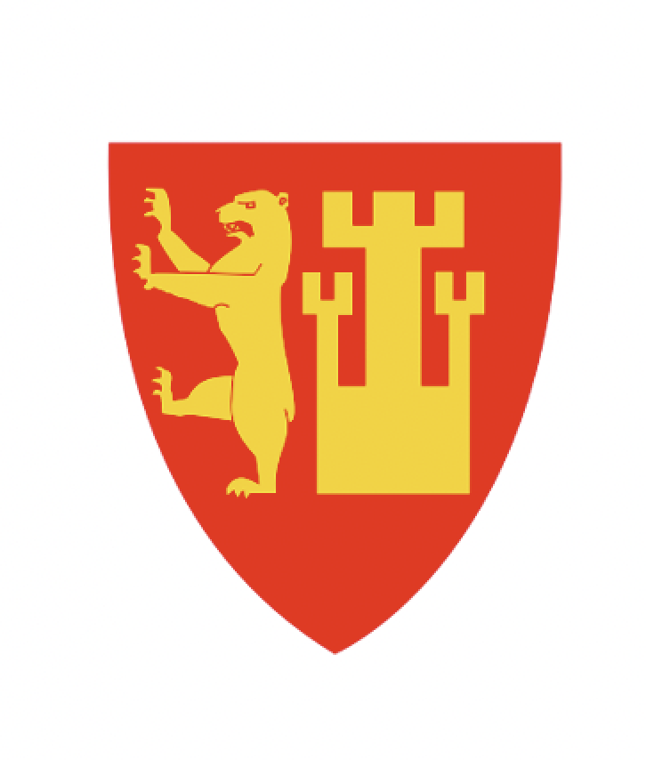

Hovedside
Bildegalleri
Linker
Kontaktside
Historie
Aktiviteter

Hei!
Velkommen til Visit Fredrikstad.
Her vil du finne masse informasjon om
attraksjoner og opplevelser
i den vidunderlige byen vi kaller Fredrikstad
Sosial medier:
@visitFR
@visitFR
@shouldvisitFR
@tryvisitFR